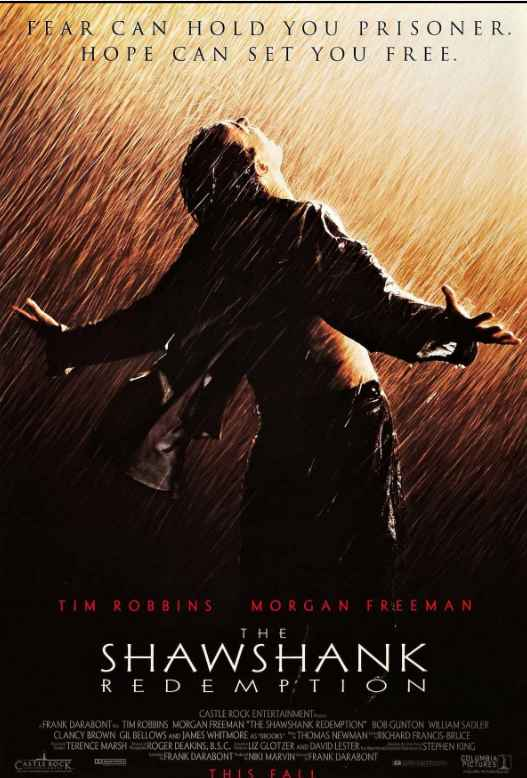

Shawshank Redemption
1994 R 2h 22m

Over the course of several years, two convicts form a friendship, seeking
consolation and, eventually, redemption through basic compassion.
- Directors: Frank Darabont
- Writers: Stephen King, Frank Darabont
- Stars Tim Robbins, Morgan Freeman, Bob Gunton
ScreenShots
Movie Ranking Page